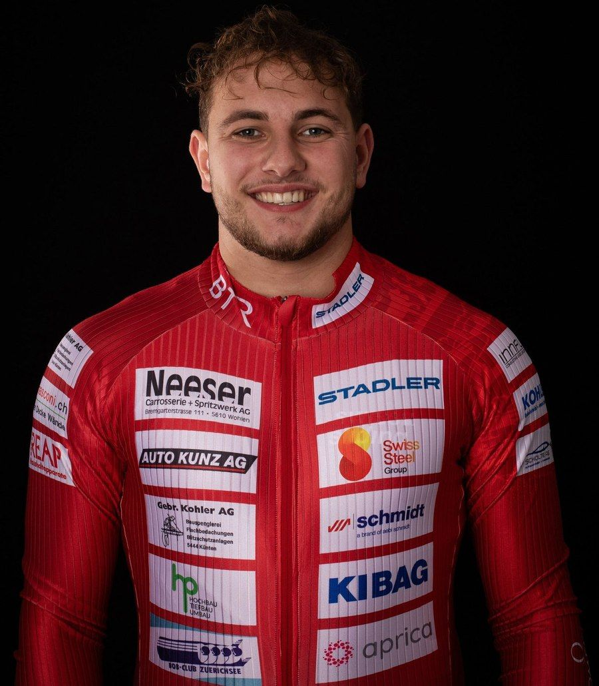
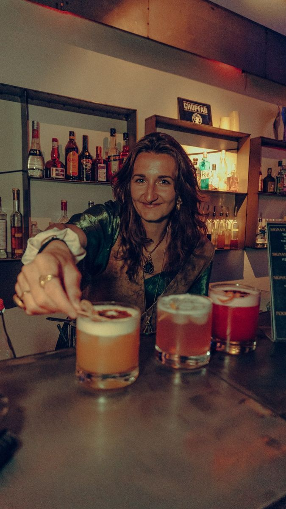
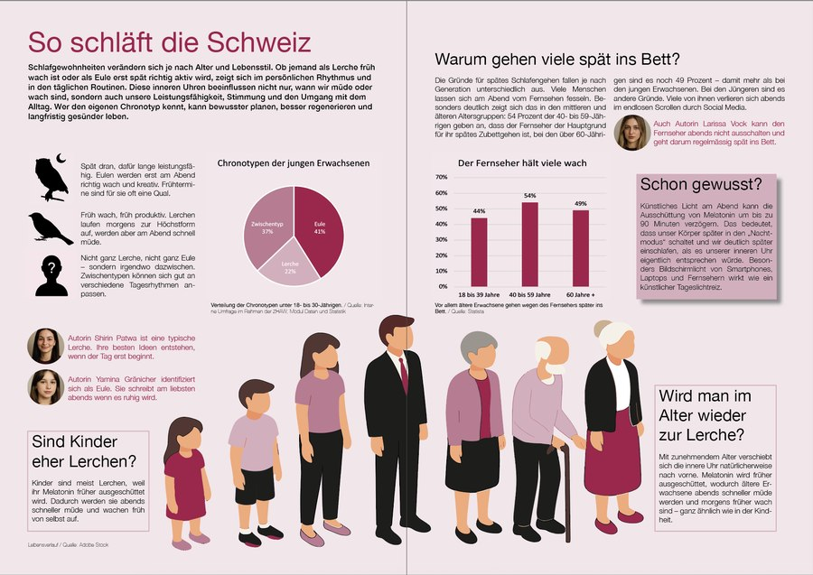

Portfolio
Hier findest du eine Auswahl an Projekten, die im Laufe meines Studiums Kommunikation & Medien entstanden sind. Aber auch private Projekte, die mir am Herzen liegen. Schau dich gerne um.

Radiobeitrag Nils Reich
Im Rahmen des Moduls Multimedia Production produzierte ich einen fiktiven Radiobeitrag. Ziel des Projekts war es, eine spannende Persönlichkeit aus dem eigenen Umfeld zu interviewen und daraus einen journalistisch aufbereiteten Audiobeitrag zu gestalten.
Projekt ansehen →
Videoporträt Noemi Mehring
Im Modul Multimedia Production produzierte ich gemeinsam mit meiner Teampartnerin in Adobe Premiere Pro ein Videoporträt über Noemi Mehring, Geschäftsleiterin der Labüsch Bar. Ziel des Projekts war es, eine Person zu porträtieren, die ihre Leidenschaft im Berufsalltag auslebt.
Projekt ansehen →
Social Media für die Labüsch Bar
Für die Labüsch Bar in Winterthur habe ich von November 2025 bis Mai 2026 den Instagram-Kanal geführt und mehrere Flyer gestaltet. Mein Konzept: Neben der Promotion von Events auch die Kunst in den Vordergrund rücken, die die Bar zu einem besonderen Ort macht.
Projekt ansehen →
Magazin Doppelseite
Im Modul Visuelle Kommunikation durften wir eine fiktive Magazindoppelseite in Adobe InDesign gestalten. Dafür wurden uns ein Thema sowie passende interne Daten für eine Datenvisualisierung vorgegeben. Das passende Magazin durften wir selbst auswählen.
Projekt ansehen →
SGKM 2026 Flyer
Für die SGKM-Tagung 2026 entwickelte ich im Rahmen eines Praxisprojekts an der ZHAW einen Flyer in Adobe InDesign. Ziel des Auftrags war es, die Teilnehmenden auf die Social-Media-Kanäle der Tagung aufmerksam zu machen. Der Flyer wurde anschliessend beim Onboarding an die Teilnehmenden verteilt.
Projekt ansehen →